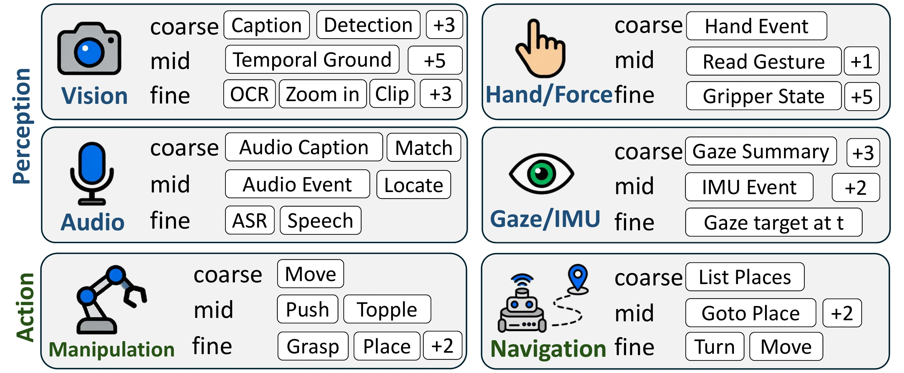
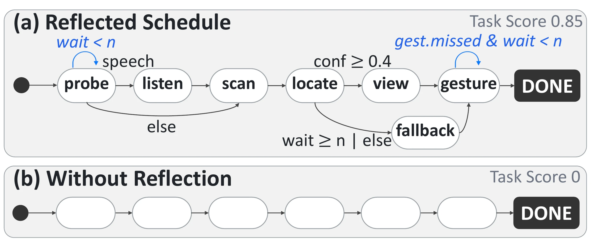
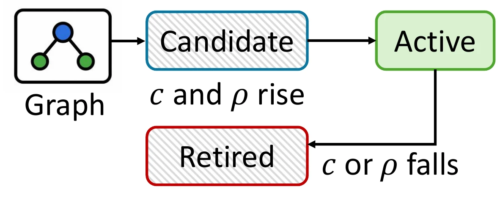
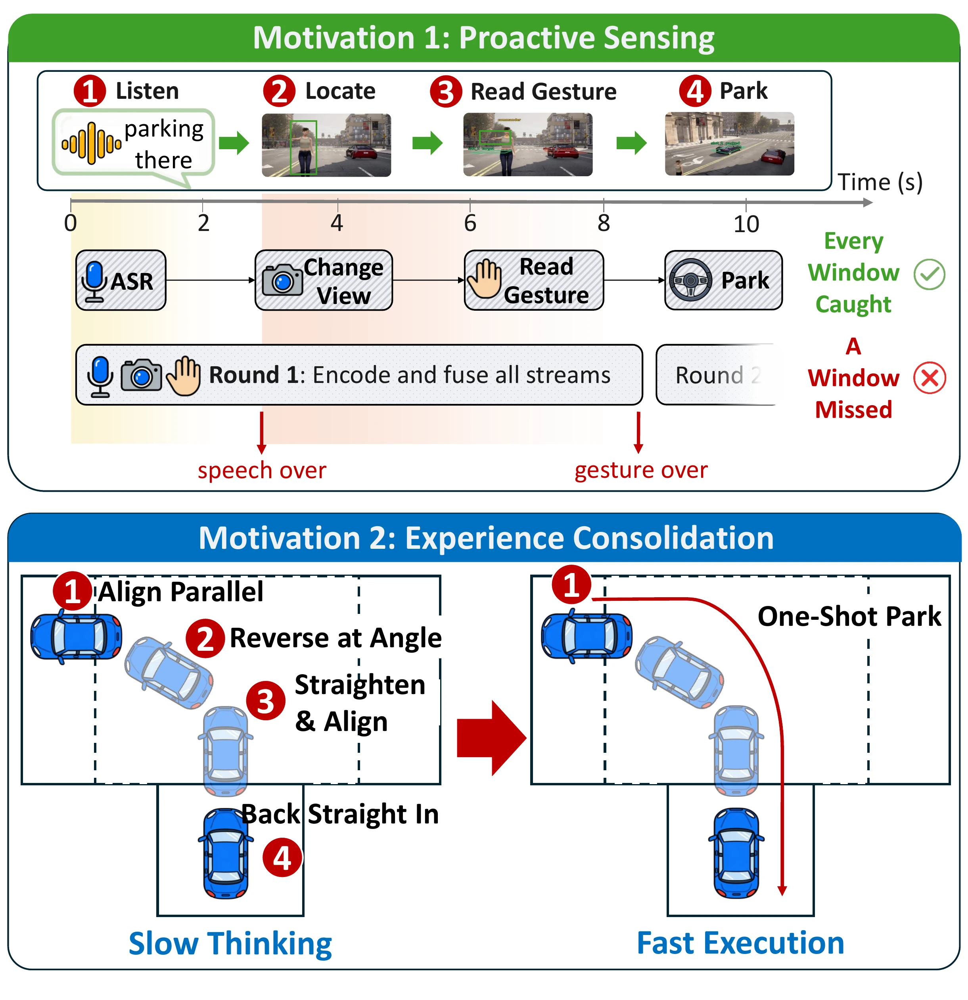
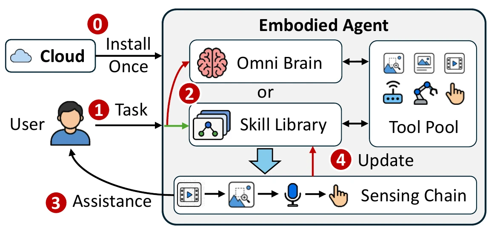

System Overview

Cloud training produces the skill compiler and an initial skill library. After deployment, the device retrieves, executes, and updates skills on its own. The system has four parts:
- One tool interface for sensing and action. Cameras, microphones, depth, IMU, gaze, trackers, and the arms themselves are typed JSON tools behind long-lived HTTP services. Adding a sensor changes a YAML contract rather than agent code, so the same brain moves between a car, an arm, and a headset.
- Deliberate once, in the cloud. The brain is trained by distillation from a large omni-modal teacher and then by reinforcement learning against outcome rewards, so a chain ends in a committed answer or action rather than in a description of what it saw.
- Compile the chain into a skill graph. The compiler keeps the calls, their order, and the guards that decide when a branch applies, and drops the prose. The executor and its guard evaluator are plain Python, under 300 lines, and need no GPU. Graphs live in a SQLite library alongside their retrieval embeddings.
- Serve by measured outcome. A skill is admitted, kept, or evicted on what it scores. At serving time a gate chooses between replay and deliberation, and a confidence-aware fallback catches the cases replay should not own. Removing that fallback costs 38 points of mean accuracy, which is what makes this a system rather than a cache.




